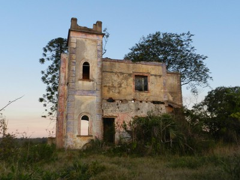
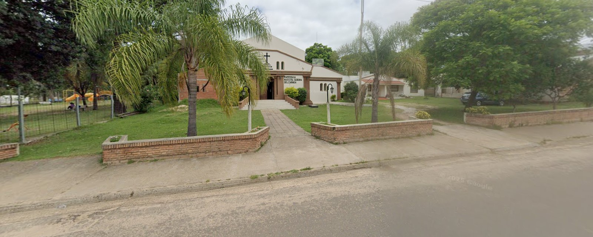
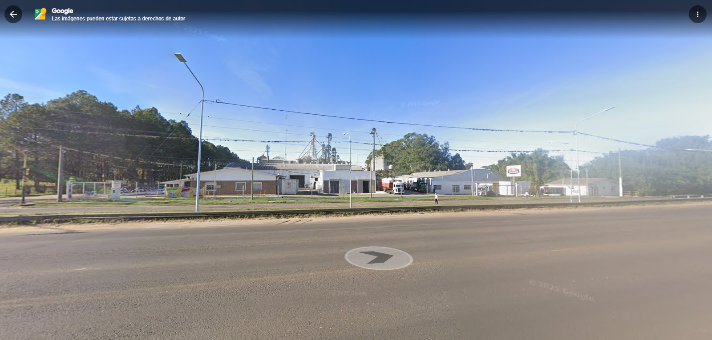

Villa Adela (introducción)
Villa Adela es un barrio y zona rural de la ciudad de Concordia, en la provincia de Entre Ríos.
Se encuentra a pocos kilómetros del centro de Concordia y se caracteriza por su ambiente tranquilo,
la cercanía con espacios naturales y una comunidad muy unida. Sus calles y espacios verdes hacen que
sea un lugar elegido por familias que buscan un ritmo de vida más calmado cerca de la ciudad.

La Charita es un paraje y sector conocido dentro de la zona de Villa Adela. Se ubica en las cercanías del arroyo Yuquerí Grande
y suele ser mencionado por vecinos como un punto de encuentro para paseos, reuniones al aire libre y actividades comunitarias.
A lo largo del tiempo, La Charita también ha sido objeto de historias y relatos locales que forman parte de la memoria del barrio,
lo que le da un carácter especial dentro de la identidad de Villa Adela.
Iglesia Nuestra Señora del Carmen

La Iglesia Nuestra Señora del Carmen es un centro religioso y de encuentro para las familias de Villa Adela.
Allí se celebran misas, bautismos, comuniones y distintas actividades comunitarias que refuerzan los lazos sociales.
Además de su función espiritual, la iglesia funciona como un espacio de apoyo y organización para las actividades del barrio.

La Arrocera Dos Hermanos es una empresa con larga tradición en la región de Concordia dedicada a la producción y procesamiento de arroz.
Nacida del trabajo de dos emprendedores locales, con los años la arrocera se amplió y diversificó su producción (arroz, snacks, tostadas y derivados),
aportando empleo y dinamismo económico a la comunidad. Hoy es considerada parte importante del tejido productivo de la zona.
Creadores de la página
Alumnos de quinto año del Colegio San Roque:
Bus Biasizo Santiago, Bautista Sandri y Benjamín Lemos Ojeda